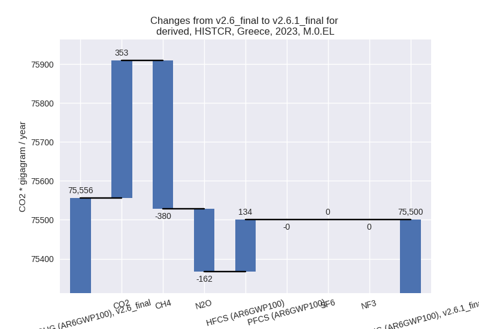

Changes in PRIMAP-hist v2.6.1_final compared to v2.6_final for Greece
2025-03-19
Johannes Gütschow
Change analysis for Greece for PRIMAP-hist v2.6.1_final compared to v2.6_final
Overview over emissions by sector and gas
The following figures show the aggregate national total emissions excluding LULUCF AR6GWP100 for the country reported priority scenario. The dotted linesshow the v2.6_final data.
The following figures show the aggregate national total emissions excluding LULUCF AR6GWP100 for the third party priority scenario. The dotted linesshow the v2.6_final data.
Overview over changes
In the country reported priority scenario we have the following changes for aggregate Kyoto GHG and national total emissions excluding LULUCF (M.0.EL):
- Emissions in 2023 have changed by -0.1%% (-55.67 Gg CO2 / year)
- Emissions in 1990-2023 have changed by 0.0%% (37.18 Gg CO2 / year)
In the third party priority scenario we have the following changes for aggregate Kyoto GHG and national total emissions excluding LULUCF (M.0.EL):
- Emissions in 2023 have changed by 1.6%% (1113.23 Gg CO2 / year)
- Emissions in 1990-2023 have changed by 1.6%% (1643.86 Gg CO2 / year)
Most important changes per scenario and time frame
In the country reported priority scenario the following sector-gas combinations have the highest absolute impact on national total KyotoGHG (AR6GWP100) emissions in 2023 (top 5):
- 1: 4, CH4 with -366.89 Gg CO2 / year (-6.0%)
- 2: 2, CO2 with 355.94 Gg CO2 / year (7.8%)
- 3: M.AG.ELV, N2O with -218.99 Gg CO2 / year (-7.3%)
- 4: 3.A, CH4 with -200.70 Gg CO2 / year (-4.1%)
- 5: 1.B.1, CH4 with 196.95 Gg CO2 / year (263.4%)
In the country reported priority scenario the following sector-gas combinations have the highest absolute impact on national total KyotoGHG (AR6GWP100) emissions in 1990-2023 (top 5):
- 1: 2, HFCS (AR6GWP100) with 38.20 Gg CO2 / year (0.8%)
- 2: 2, CO2 with 11.72 Gg CO2 / year (0.2%)
- 3: 4, CH4 with -10.79 Gg CO2 / year (-0.2%)
- 4: M.AG.ELV, N2O with -6.44 Gg CO2 / year (-0.2%)
- 5: 3.A, CH4 with -5.90 Gg CO2 / year (-0.1%)
In the third party priority scenario the following sector-gas combinations have the highest absolute impact on national total KyotoGHG (AR6GWP100) emissions in 2023 (top 5):
- 1: 1.B.2, CH4 with 1207.76 Gg CO2 / year (375.9%)
- 2: M.AG.ELV, N2O with -245.08 Gg CO2 / year (-8.5%)
- 3: 3.A, CH4 with 224.21 Gg CO2 / year (6.7%)
- 4: 2, CO2 with 207.79 Gg CO2 / year (5.7%)
- 5: 1.B.1, CH4 with 204.00 Gg CO2 / year (320.6%)
In the third party priority scenario the following sector-gas combinations have the highest absolute impact on national total KyotoGHG (AR6GWP100) emissions in 1990-2023 (top 5):
- 1: 2, HFCS (AR6GWP100) with 1542.39 Gg CO2 / year (47.2%)
- 2: 1.B.2, CH4 with 291.48 Gg CO2 / year (22.9%)
- 3: 4, CH4 with -218.77 Gg CO2 / year (-4.4%)
- 4: 5, N2O with -41.30 Gg CO2 / year (-9.6%)
- 5: 1.B.1, CH4 with 33.27 Gg CO2 / year (2.6%)
Notes on data changes
Here we list notes explaining important emissions changes for the country.
- CRT data has been included but replaces official data reported to the EU which does not show noteworthy differences. Changes in the CR time-series are small for cumulative emissions and come from updated third party data (EDGAR, FAO) which is used to extrapolate the country reported data. For 2023 some individual sector changes are larger in relative terms, but their influence on total emissions is small. they mostly come from third party data (EDGAR) replacing numerical extrapolation.
- In the TP scenario the main 2023 change is from fugitive CH4 in
1.B.2 where the EDGAR data used in v2.6 had a sudden drop in emissions
between 2012 and 2017 which is not present in the new EDGAR 2024 data.
This also impacts cumulative emissions.
- The main driver of higher cumulative emissions is a 47% increase in HFC emissions which is due to much higher emission in the new EDGAR data for 1990 - 2005.
Changes by sector and gas
For each scenario and time frame the changes are displayed for all individual sectors and all individual gases. In the sector plot we use aggregate Kyoto GHGs in AR6GWP100. In the gas plot we usenational total emissions without LULUCF.
country reported scenario
2023

1990-2023
third party scenario
2023
1990-2023
Detailed changes for the scenarios:
country reported scenario (HISTCR):
Most important changes per time frame
For 2023 the following sector-gas combinations have the highest absolute impact on national total KyotoGHG (AR6GWP100) emissions in 2023 (top 5):
- 1: 4, CH4 with -366.89 Gg CO2 / year (-6.0%)
- 2: 2, CO2 with 355.94 Gg CO2 / year (7.8%)
- 3: M.AG.ELV, N2O with -218.99 Gg CO2 / year (-7.3%)
- 4: 3.A, CH4 with -200.70 Gg CO2 / year (-4.1%)
- 5: 1.B.1, CH4 with 196.95 Gg CO2 / year (263.4%)
For 1990-2023 the following sector-gas combinations have the highest absolute impact on national total KyotoGHG (AR6GWP100) emissions in 1990-2023 (top 5):
- 1: 2, HFCS (AR6GWP100) with 38.20 Gg CO2 / year (0.8%)
- 2: 2, CO2 with 11.72 Gg CO2 / year (0.2%)
- 3: 4, CH4 with -10.79 Gg CO2 / year (-0.2%)
- 4: M.AG.ELV, N2O with -6.44 Gg CO2 / year (-0.2%)
- 5: 3.A, CH4 with -5.90 Gg CO2 / year (-0.1%)
Changes in the main sectors for aggregate KyotoGHG (AR6GWP100) are
- 1: Total sectoral emissions in 2022 are 54462.43 Gg CO2 / year which is 68.8% of M.0.EL emissions. 2023 Emissions have changed by 0.5% (235.60 Gg CO2 / year). 1990-2023 Emissions have changed by 0.0% (6.93 Gg CO2 / year).
- 2: Total sectoral emissions in 2022 are 10460.88 Gg
CO2 / year which is 13.2% of M.0.EL emissions. 2023 Emissions have
changed by 5.1% (493.41 Gg CO2 /
year). 1990-2023 Emissions have changed by 0.4% (53.33 Gg CO2 / year). For 2023 the
changes per gas
are:
- M.AG: Total sectoral emissions in 2022 are 8051.40
Gg CO2 / year which is 10.2% of M.0.EL emissions. 2023 Emissions have
changed by -5.2% (-428.96 Gg CO2 /
year). 1990-2023 Emissions have changed by -0.1% (-12.62 Gg CO2 / year). For 2023 the
changes per gas
are:

The changes come from the following subsectors:- 3.A: Total sectoral emissions in 2022 are 4952.07
Gg CO2 / year which is 61.5% of category M.AG emissions. 2023 Emissions
have changed by -4.0% (-201.19 Gg
CO2 / year). 1990-2023 Emissions have changed by -0.1% (-5.92 Gg CO2 / year). For 2023 the
changes per gas
are:
There is no subsector information available in PRIMAP-hist. - M.AG.ELV: Total sectoral emissions in 2022 are
3099.33 Gg CO2 / year which is 38.5% of category M.AG emissions. 2023
Emissions have changed by -7.1%
(-227.77 Gg CO2 / year). 1990-2023 Emissions have changed by -0.2% (-6.70 Gg CO2 / year). For 2023 the
changes per gas
are:
There is no subsector information available in PRIMAP-hist.
- 3.A: Total sectoral emissions in 2022 are 4952.07
Gg CO2 / year which is 61.5% of category M.AG emissions. 2023 Emissions
have changed by -4.0% (-201.19 Gg
CO2 / year). 1990-2023 Emissions have changed by -0.1% (-5.92 Gg CO2 / year). For 2023 the
changes per gas
are:
- 4: Total sectoral emissions in 2022 are 6226.95 Gg
CO2 / year which is 7.9% of M.0.EL emissions. 2023 Emissions have
changed by -5.6% (-355.72 Gg CO2 /
year). 1990-2023 Emissions have changed by -0.2% (-10.46 Gg CO2 / year). For 2023 the
changes per gas
are:
- 5: No data
third party scenario (HISTTP):
Most important changes per time frame
For 2023 the following sector-gas combinations have the highest absolute impact on national total KyotoGHG (AR6GWP100) emissions in 2023 (top 5):
- 1: 1.B.2, CH4 with 1207.76 Gg CO2 / year (375.9%)
- 2: M.AG.ELV, N2O with -245.08 Gg CO2 / year (-8.5%)
- 3: 3.A, CH4 with 224.21 Gg CO2 / year (6.7%)
- 4: 2, CO2 with 207.79 Gg CO2 / year (5.7%)
- 5: 1.B.1, CH4 with 204.00 Gg CO2 / year (320.6%)
For 1990-2023 the following sector-gas combinations have the highest absolute impact on national total KyotoGHG (AR6GWP100) emissions in 1990-2023 (top 5):
- 1: 2, HFCS (AR6GWP100) with 1542.39 Gg CO2 / year (47.2%)
- 2: 1.B.2, CH4 with 291.48 Gg CO2 / year (22.9%)
- 3: 4, CH4 with -218.77 Gg CO2 / year (-4.4%)
- 4: 5, N2O with -41.30 Gg CO2 / year (-9.6%)
- 5: 1.B.1, CH4 with 33.27 Gg CO2 / year (2.6%)
Changes in the main sectors for aggregate KyotoGHG (AR6GWP100) are
- 1: Total sectoral emissions in 2022 are 54336.04 Gg
CO2 / year which is 71.8% of M.0.EL emissions. 2023 Emissions have
changed by 3.0% (1500.44 Gg CO2 /
year). 1990-2023 Emissions have changed by 0.5% (344.21 Gg CO2 / year). For 2023 the
changes per gas
are:

The changes come from the following subsectors:- 1.A: Total sectoral emissions in 2022 are 52451.47 Gg CO2 / year which is 96.5% of category 1 emissions. 2023 Emissions have changed by 0.1% (64.99 Gg CO2 / year). 1990-2023 Emissions have changed by 0.0% (2.30 Gg CO2 / year).
- 1.B.1: Total sectoral emissions in 2022 are 344.19
Gg CO2 / year which is 0.6% of category 1 emissions. 2023 Emissions have
changed by 314.6% (205.12 Gg CO2 /
year). 1990-2023 Emissions have changed by 2.5% (33.31 Gg CO2 / year). For 2023 the
changes per gas
are:
For 1990-2023 the changes per gas are:
There is no subsector information available in PRIMAP-hist. - 1.B.2: Total sectoral emissions in 2022 are 1539.95
Gg CO2 / year which is 2.8% of category 1 emissions. 2023 Emissions have
changed by 380.1% (1229.92 Gg CO2 /
year). 1990-2023 Emissions have changed by 24.2% (308.46 Gg CO2 / year). For 2023 the
changes per gas
are:
For 1990-2023 the changes per gas are:
There is no subsector information available in PRIMAP-hist.
- 2: Total sectoral emissions in 2022 are 9735.33 Gg
CO2 / year which is 12.9% of M.0.EL emissions. 2023 Emissions have
changed by 0.6% (56.79 Gg CO2 /
year). 1990-2023 Emissions have changed by 14.8% (1551.75 Gg CO2 / year). For
1990-2023 the changes per gas
are:
- M.AG: Total sectoral emissions in 2022 are 7134.98
Gg CO2 / year which is 9.4% of M.0.EL emissions. 2023 Emissions have
changed by -3.4% (-243.10 Gg CO2 /
year). 1990-2023 Emissions have changed by 0.1% (7.97 Gg CO2 / year). For 2023 the
changes per gas
are:
The changes come from the following subsectors:- 3.A: Total sectoral emissions in 2022 are 3827.08
Gg CO2 / year which is 53.6% of category M.AG emissions. 2023 Emissions
have changed by 6.7% (234.88 Gg CO2
/ year). 1990-2023 Emissions have changed by 0.6% (27.43 Gg CO2 / year). For 2023 the
changes per gas
are:
There is no subsector information available in PRIMAP-hist. - M.AG.ELV: Total sectoral emissions in 2022 are
3307.89 Gg CO2 / year which is 46.4% of category M.AG emissions. 2023
Emissions have changed by -13.0%
(-477.98 Gg CO2 / year). 1990-2023 Emissions have changed by -0.4% (-19.46 Gg CO2 / year). For 2023 the
changes per gas
are:
There is no subsector information available in PRIMAP-hist.
- 3.A: Total sectoral emissions in 2022 are 3827.08
Gg CO2 / year which is 53.6% of category M.AG emissions. 2023 Emissions
have changed by 6.7% (234.88 Gg CO2
/ year). 1990-2023 Emissions have changed by 0.6% (27.43 Gg CO2 / year). For 2023 the
changes per gas
are:
- 4: Total sectoral emissions in 2022 are 4221.89 Gg
CO2 / year which is 5.6% of M.0.EL emissions. 2023 Emissions have
changed by -4.2% (-181.14 Gg CO2 /
year). 1990-2023 Emissions have changed by -4.2% (-218.78 Gg CO2 / year). For 2023
the changes per gas
are:
For 1990-2023 the changes per gas are: - 5: Total sectoral emissions in 2022 are 242.06 Gg
CO2 / year which is 0.3% of M.0.EL emissions. 2023 Emissions have
changed by -7.6% (-19.75 Gg CO2 /
year). 1990-2023 Emissions have changed by -9.6% (-41.30 Gg CO2 / year). For 2023 the
changes per gas
are:
For 1990-2023 the changes per gas are: